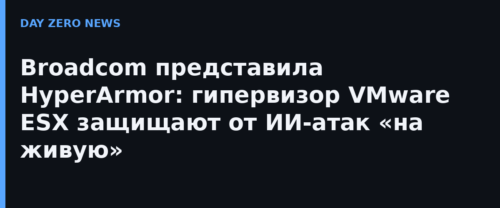

Broadcom представила VMware HyperArmor — решение, которое закрывает гипервизор ESX в составе VMware Cloud Foundation (VCF) от так называемых ИИ-ускоренных киберугроз. Смысл сдвига, на который ссылается анонс, простой: автономные ИИ-агенты находят и эксплуатируют уязвимости нулевого дня быстрее, чем вендор успевает выпустить и установить обычный патч. Окно между появлением дыры и её закрытием измеряется уже не месяцами, а часами — и именно это окно HyperArmor обещает схлопнуть.
Три основных механизма, судя по официальному анонсу VMware. Первый — виртуальное патирование на уровне хоста: вредоносное поведение блокируется на гипервизоре ещё до выхода настоящего патча, без простоя и без обновления ПО. Второй — «позитивные» ограничители (positive security guardrails): вместо чёрных списков разрешается только заранее известное доброе поведение, всё остальное отсекается. Третий — многофакторная аутентификация на уровне самого гипервизора, в том числе для SSH-доступа к ESX: украденный ключ администратора больше не должен открывать хост целиком.
Гипервизор — идеальная цель: один скомпрометированный ESX отдаёт атакующему десятки виртуальных машин целиком. Осенние инциденты с массовыми атаками на ESXi показали, что гипервизоры взламывают и реально вымогают деньги за «тихую» эксплуатацию. А после того как ИИ-модели начали сами находить дыры в инфраструктурном коде, оборона без человека на дозорном участке становится не экзотикой, а необходимостью. Примечательно, что анонс HyperArmor совпал по времени с другой горячей историей недели — массовыми атаками через критическую уязвимость в PHP, которую, по предварительным данным, нашли с помощью ИИ-агентов.
Broadcom подчёркивает: защита включается без остановки рабочих нагрузок и без апгрейда — то есть обходят главное оправдание «патч поставим в следующее окно». Практический вывод для владельцев VCF-средств прежний: окно между публикацией уязвимости и патчем всё равно нужно сокращать вручную, а HyperArmor стоит рассматривать как страховку на случай, когда патча ещё нет. Официального анонса аналогичной «виртуальной брони» для гипервизоров от российских вендоров на момент публикации статьи не было.